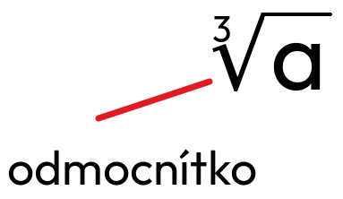

Třetí odmocnina
Základy
Krychlové číslo - přirozené číslo, které je 3. mocninou nějakého přirozeného čísla (např. 1, 8, 27, 64).
(b³ = a) = = b
Třetí odmocnina existuje i pro záporná čísla.
= -3
-3 × -3 × -3 = -27
Třetí odmocnina může být kladná, záporná nebo nula, podle hodnoty čísla pod odmocninou.
= 2
protože 2 × 2 × 2 = 8.
Pravidlo
= ×
Odmocňování zpaměti
- Odstraním koncové nuly - 27
- Odmocním - 3
- Vrátím třetinu nul - 30
= 30
- Odstraním des. čárku - 1
- Odmocním - 1
- Vrátím třetinu des. míst - 0,1
= 0,1